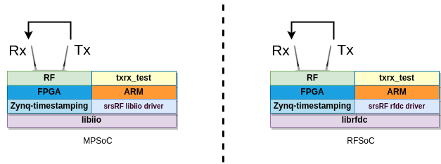

Application Note: Petalinux build, software cross-compilation and Tx-Rx testing with the ZCU102 and ZCU111 platforms¶
Overview¶
Hardware and Software Requirements¶
For this application note, the following hardware and software will be used:
Dell XPS13 with Ubuntu 20.04.4
Xilinx Zynq UltraScale+ MPSoC ZCU102/RFSoC ZCU111 Evaluation Kit with custom SRS bitstream and Petalinux 2019.2
srsRAN
SRS Zynq timestamping
Analog Devices libiio and libad9361 software libraries (ZCU102 only)
Prerequisites¶
1. You need to generate the custom SRS timestamp bitstream and to load it in the board (see the ZCU102 project build or the ZCU111 project build section for more details).
Building the binaires for ARM and preparing a bootable SD card¶
Before you can build srsRAN or your custom SDR application binaries targeting the ARM embedded in the MPSoC/RFSoC device, you’ll need to setup a toolchain and a minimal sysroot suitable for the cross-compilation of the Zynq timestamping software.
In this Application Note it is described the build and utilization of Petalinux, as it provides an easy and convenient command-line interface which allows building bootfiles, a rootfilesystem and a complete SDK (i.e., toolchain + target sysroot) suitable for cross-compilation. It should also be perfectly possible to use Yocto tools directly, or another build-system (e.g., buildroot) if you should prefer so, but it is out of the scope of this Application Note.
Building Petalinux 2019.2¶
The Petalinux project is based on the exported hardware configuration files of the Vivado project implemented as part of the prerequisites. Once the project is implemented, make sure to export the hardware configuration and bitstream as described below:
From the lateral IMPLEMENTATION menu select Open Implemented Design
From the File select Export -> Export Hardware…
Check Include bistream
In Export to select the sdk subfolder of the Vivado project (_VIVADO_PROJECT_PATH_/_VIVADO_PROJECT_NAME_.sdk)
The following steps are required to build Petalinux:
1. Download the BSP for ZCU102 or ZCU111 for for Vivado 2019.2.
2. Download the Petalinux SDK for Vivado 2019.2.
3. Check the documentation and verify that all dependencies are installed. The following command can be used to install dependencies in Ubuntu 20.04:
sudo apt-get update & sudo apt-get install -y python tofrodos iproute2 gawk xvfb gcc git make net-tools libncurses5-dev tftpd zlib1g-dev libssl-dev flex bison libselinux1 gnupg wget diffstat chrpath socat xterm autoconf libtool tar unzip texinfo zlib1g-dev gcc-multilib build-essential libsdl1.2-dev libglib2.0-dev zlib1g:i386 screen pax
Install the Petalinux Tools:
./petalinux-v2019.2-final-installer.run _INSTALL_PATH_/petalinux_sdk_2019.2
Create a folder to build Petalinux 2019.2 (e.g., _PETALINUX_).
Run the following commands (from _PETALINUX_ build folder):
source _INSTALL_PATH_/petalinux_sdk_2019.2/settings.sh
In case of problems with bash see the following Xilinx forum post .
petalinux-create -t project -s xilinx-zcu111-v2019.2-final.bsp
cd xilinx-zcu111-2019.2/
Load the hardware description (generated from Vivado):
petalinux-config --get-hw-description _VIVADO_PROJECT_PATH_/_VIVADO_PROJECT_NAME_.sdk
A configuration menu pops up, verify the following configs and do any required changes, then save & exit:
. Subsystem AUTO Hardware Settings ->
.. Advanced bootable images storage Settings ->
* boot image settings -> image storage media -> primary sd
* kernel image settings -> image storage media -> primary sd
-> image name -> Image
* dtb image settings -> image storage media -> primary sd
.. Flash settings -> *** partition 3 *** -> set name 'spare'
. Image Packaging Configuration ->
.. Root filesystem type -> SD card
.. Device node of SD device -> /dev/mmcblk0p2
.. name for bootable kernel image -> Image
. Yocto Settings ->
.. Enable Debug Tweaks
.. Parallel thread execution -> set number of bb trheads -> 4
-> set number of parallel make -j -> 4
Configure the kernel:
petalinux-config -c kernel
Important note: in the Zynq timestamping solution for the ZCU111 board a customized kernel is built from source code, while adding a custom kernel module. The full instructions for this are provided below. We advise you to first always build the kernel through the Petalinux tools, and to validate that it works well and is properly configured (e.g., it has all necessary modules), before proceeding to build a customized kernel.
A configuration menu pops up, verify the following configs and do any required changes, then save & exit:
. CPU Power Management -> CPU Idle -> disable CPU idle PM support
Configure the rootfs:
petalinux-config -c rootfs
A configuration menu pops up, add the following modules, then save & exit:
. Filesystem Packages
.. base -> select i2c-tools
.. console -> network -> dropbear -> select dropbear
.. devel -> python -> python -> select all modules
python-numpy -> select python-numpy
.. libs -> libmetal -> select all modules
libgcrypt -> select all modules
network -> openssl -> select all modules
.. misc -> gdb -> select all modules
python3 -> select all modules
python3-async -> select python3-async
python3-setuptools -> select python3-setuptools
. Petalinux Package Groups
.. packagegroup-petalinux -> select all modules
For the ZCU111 build case, no extra dependencies should be needed to cross-compile the Zynq timestamping software and txrx example application; for ZCU102 the libiio libraries are required and, hence, they need to be included in the rootfs and SDK (this is out of the scope of this Application note, but instructions can be found in the META-ADI-XILINX repository). In case you want to cross-compile the entire srsRAN software suite and test more complex applications, you would also need to add the extra dependencies into project-spec/meta-user/recipes-core/images/petalinux-user-image.bbappend as detailed:
IMAGE_INSTALL_append = "\
boost \
boost-dev \
mbedtls \
mbedtls-dev \
libfftw \
libfftwf \
pcsc-lite \
pcsc-lite-dev \
lksctp-tools \
lksctp-tools-withsctp \
lksctp-tools-dev \
"
Finally, to build Petalinux and package the generated rootsystem:
petalinux-build
petalinux-build --sdk
petalinux-package --sysroot
In case of problems see the following Xilinx forum post .
The files resulting from the commands above will be left at _PETALINUX_/xilinx-zcu111-2019.2/images/linux
petalinux-package --boot --format BIN --fsbl images/linux/zynqmp_fsbl.elf --u-boot images/linux/u-boot.elf --pmufw images/linux/pmufw.elf --fpga _VIVADO_PROJECT_PATH_/_VIVADO_PROJECT_NAME_.runs/impl_1/design_1_wrapper.bit --force
Preparing the SD card¶
Create 2 partitions in the SD card:
BOOT, 1 GB, FAT32, primary
rootfs, remaining space, ext4, primary
Copy the following files to the BOOT partition of the SD card:
BOOT.BIN (from _PETALINUX_/xilinx-zcu111-2019.2/images/linux)
Image (from _PETALINUX_/xilinx-zcu111-2019.2/images/linux)
system.dtb (from _PETALINUX_/xilinx-zcu111-2019.2/images/linux)
uEnv.txt (you can find an example in the repository under /projects/zcu1XX/bootfiles/)
3. Deploy rootfs in the ext4 partition of the SD card (the compressed rootfs file is located at _PETALINUX_/xilinx-zcu111-2019.2/images/linux):
sudo tar xvf rootfs.tar.gz -C _PATH_TO_MOUNTED_SD_CARD_/rootfs
Compiling a customized Linux kernel from source code¶
Once you have verified that you can successfully boot the board using an SD card prepared as detailed above, you can replace the Linux kernel with a customized one compiled from source code (this approach seems more convenient when compilation of out-of-tree Linux kernel modules is required). Follow the instructions below for two different kernel sources.
Default Xilinx kernel¶
Get the source code from Xilinx GitHub:
git clone https://github.com/Xilinx/linux-xlnx.git
cd linux-xlnx
git checkout -b xilinx-v2019.2.01 tags/xilinx-v2019.2.01
export ARCH=arm64 && export CROSS_COMPILE=aarch64-linux-gnu-
Take the configuration from a running kernel:
scp -r root@<zcu111-ip-address>:/proc/config.gz .
zcat config.gz > .config
Configure the kernel:
make ARCH=arm64 oldconfig
Cross-compile the kernel and modules:
make ARCH=arm64 CROSS_COMPILE=aarch64-linux-gnu- -j8 Image UIMAGE_LOADADDR=0x8000
mkdir compiled_modules
make ARCH=arm64 CROSS_COMPILE=aarch64-linux-gnu- -j8 INSTALL_MOD_PATH=./compiled_modules modules
make ARCH=arm64 CROSS_COMPILE=aarch64-linux-gnu- -j8 INSTALL_MOD_PATH=./compiled_modules modules_install
Copy the Image file from arch/arm64/boot/ to the BOOT partition of the SD card. Copy the modules to /lib/modules/ in the rootfs partition of the card.
Analog Devices kernel¶
You can find conveniently detailed instructions, especially for the ZCU102 and FMCOMMS2 pairing, on the Analog Devices Wiki .
Compiling a custom Linux kernel driver¶
The source code for the driver required to implement timestamping support in the ZCU111 board can be found in a dedicated folder in the Zynq timestamping repository (under /sw/lib/src/phy/rf/xrfdc/kernel_module), jointly with its associated Makefile. Note that this specific driver is not required for any other of the supported boards.
Before compiling the custom driver, make sure that you first have compiled the Linux kernel by following the instructions provided above. Once all is set, a KDIR variable needs to be defined in the Makefile to ensure that it points to the kernel source code directory. The following commands must then be executed:
export CROSS_COMPILE=aarch64-linux-gnu-
export ARCH=arm64
make ARCH=arm64 -j4
As a result of its successful compilation a srs_dma_driver.ko file will be generated. This file can be used with the previously compiled Linux kernel after booting up the board.
In order to install the driver in the Linux running in the ZCU111 the srs_dma_driver.ko file needs to be transferred to the board. Then execute:
insmod srs_dma_driver.ko
Modifying evicetree¶
The custom srs_dma_driver driver obtains information regarding the DMA IPs from the devicetree. Hence, the latter must include additional information for this. Below you can see how to define the srs_rx_dma and srs_tx_dma nodes that do refer to the specific DMAs used by the Zynq timestamping solution (you may also check this in the Vivado project built in earlier steps):
dma@a0060000 {
#dma-cells = <0x01>;
clock-names = "s_axi_lite_aclk\0m_axi_s2mm_aclk";
clocks = <0x03 0x47 0x03 0x47>;
compatible = "xlnx,axi-dma-7.1\0xlnx,axi-dma-1.00.a";
interrupt-names = "s2mm_introut";
interrupt-parent = <0x04>;
interrupts = <0x00 0x5a 0x04>;
reg = <0x00 0xa0060000 0x00 0x10000>;
xlnx,addrwidth = <0x40>;
phandle = <0x37>;
dma-channel@a0060030 {
compatible = "xlnx,axi-dma-s2mm-channel";
dma-channels = <0x01>;
interrupts = <0x00 0x5a 0x04>;
xlnx,datawidth = <0x40>;
xlnx,device-id = <0x00>;
};
};
srs_rx_dma {
compatible = "srs,txrx_dma";
dmas = <0x37 0x00>;
dma-names = "rx";
dma-direction = "rx";
dma-coherent;
};
dma@a0070000 {
#dma-cells = <0x01>;
clock-names = "s_axi_lite_aclk\0m_axi_mm2s_aclk";
clocks = <0x03 0x47 0x03 0x47>;
compatible = "xlnx,axi-dma-7.1\0xlnx,axi-dma-1.00.a";
interrupt-names = "mm2s_introut";
interrupt-parent = <0x04>;
interrupts = <0x00 0x5b 0x04>;
reg = <0x00 0xa0070000 0x00 0x10000>;
xlnx,addrwidth = <0x40>;
phandle = <0x38>;
dma-channel@a0070000 {
compatible = "xlnx,axi-dma-mm2s-channel";
dma-channels = <0x01>;
interrupts = <0x00 0x5b 0x04>;
xlnx,datawidth = <0x20>;
xlnx,device-id = <0x01>;
};
};
srs_tx_dma {
compatible = "srs,txrx_dma";
dmas = <0x38 0x00>;
dma-names = "tx";
dma-direction = "tx";
};
The following commands will be useful for altering the default devicetree file, either built by Petalinux or by follwing the instructions from Analog Devices wiki, ensuring that the board can successfully boot with it.
Generate an editable devicetree file:
dtc -I dtb -O dts -o system.dts system.dtb
Modify it as needed and recompile:
dtc -I dts -O dtb -o system.dtb system.dts
Cross-compiling the Zynq timestamping library and Tx-Rx example application¶
The first step is to install the SDK that was built via petalinux-tools in your host PC. This file is located at /PETALINUX_BUILD_PATH/xilinx-zcu111-2019.2/images/linux. To install it, use the following command:
./sdk.sh
You will be prompted to specify the toolchain installation path (for instance, use /opt/plnx_sdk_rfsoc). When the installation finishes, set up the following environment variables:
. /opt/plnx_sdk_rfsoc/environment-setup-aarch64-xilinx-linux
Then, go to the /app subfolder in the path where the Zynq timestamping repository is cloned locally and execute the initialization script. It will download all necessary git submodules and compile the RF drivers and example Tx-Rx application. The default command builds the RF driver based on the Analog Devices libiio library (i.e, it is suitable for the ZCU102, plutoSDR and antSDR boards), using the following command:
./prepare.sh
For the ZCU111 board, which uses an RFSoC device, you will need to pass an extra parameter to the initialization script call as follows, so that it uses the Xilinx librfdc library:
./prepare.sh zcu111
When the build finishes, you will find the application under the bin_app/ subfolder. The binary needs then to be transferred to the board (e.g., in /home/srs/bin).
NOTE: both ZCU bitsreams have been built by default to implement an internal buffering stage in the timestamped DAC path supporting storage of up to 8x 16000 sample-packets coming from the CPU - that is, according to the default values for the CONFIG.PARAM_BUFFER_LENGTH and CONFIG.PARAM_MAX_DMA_PACKET_LENGTH parameters of the dac_fifo_timestamp_enabler block, which would theoretically enable storing 8 ms worth of signal up to 10 MHz BW (i.e., 15360 samples per subframe). Nevertheless, by default the RF IIO driver uses DMA packets of 1920 samples - that is, 1 ms (one subframe) worth of signal for 1.4 MHz BW.
Running¶
First of all, you need to make sure that the board is set up to implement a Tx-Rx loopback (e.g., cable the Tx and Rx ports together).
A customized txrx application (aimed at demonstrating the basic capabilities of the Zynq timestamping solution) has been compiled and transferred to the board in the previous step. It will transmit three tones with a separation of 4 ms between them, while generating a capture file signal as well. A script is also provided to execute it. After transferring the script to the same path containing the txrx application binary in the board (e.g. /home/srs/bin), run the follwing command (from that path):
./run_txrx_zcu.sh
Note that all the scripts located under ‘/app/scripts’ are meant to help the understand what applications can be used with each board and what parameters need to be provided.
(Optional) After transferring back the data capture generated in the board to your computer, you can plot the captured signal with the following command:
python3 show.py test_txrx_zcu.bin